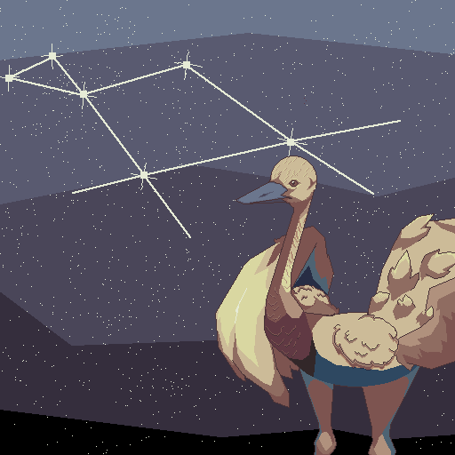

Mira al cielo
NAUOXO
So Mañec Piguem Le’ec – El Ñandú del Cielo

SI · ENTONCES · PARA CADA · MIENTRAS · CREAR · IMAGINAR · APRENDER · COMPARTIR · SI · ENTONCES · PARA CADA · MIENTRAS · CREAR · IMAGINAR · APRENDER · COMPARTIR ·
Mira al cielo
